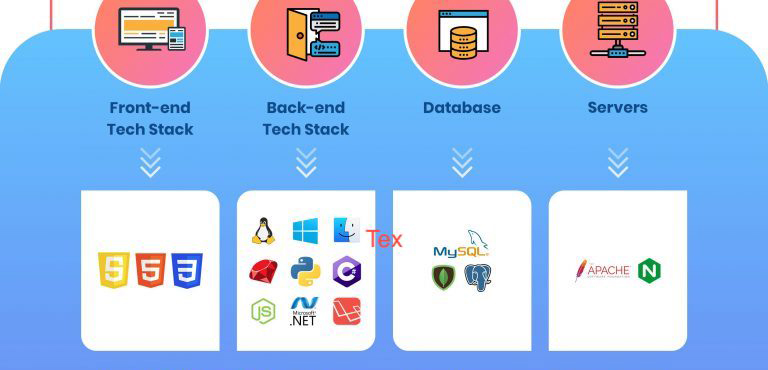

Welcome

Nijin Nazar
ReactJS Developer
Frontend Developer @ Campuzon
Ex-SDE Intern @ CuriousJr & TGH Tech
Ping me on LinkedInContent
- Introduction to Web
- Benefits of learning Web Development
- Frontend vs Backend Development
- Database
- API
- Roadmap
- Job opportunities in Industry
- Conclusion
Introduction to Web (WWW)

Difference between Internet & WWW ?
The internet is the underlying infrastructure that provides the means for devices to communicate and share data, while the World Wide Web is a system of interconnected documents and resources built on top of the internet, that enables access to information and services through web browsers.
URL: It is a string of characters that identifies a web page or resource on the internet. URLs are used to locate resources such as web pages, images, videos, or documents.
Hyperlink: It is a clickable element in a web page that takes you to another web page or resource. Hyperlinks are usually displayed as underlined or colored text, but can also be represented by images or other elements.
IP Address vs Domain: When you enter a domain name in your browser, the browser looks up the corresponding IP address associated with that domain and then connects to that IP address to access the website. Think of it like a phone book - the domain is like the person's name, and the IP address is like their phone number.
What is a search engine & how does it work ?
A search engine is a software tool that allows users to search for information on the World Wide Web (WWW). It is an essential component of the Web, providing users with a convenient way to find and access the vast amounts of information available on the Internet.
Search engines work by crawling or indexing the Web, which involves automatically browsing through websites and collecting information about their content. This information is then stored in a database, which the search engine can use to respond to user queries.
Benefits of Learning Web Development
Frontend vs Backend Development
Frontend
They design and develop the part of the application that users see and interact with, including the layout, user interface, and functionality. Frontend developers use programming languages such as HTML, CSS, and JavaScript to create user interfaces and make them interactive.
It is also referred to as the ‘client side’ of the application.

Backend
- It is the part of the website that users cannot see and directly interact with.
- Backend developers are responsible for the server-side of a web application. They work on the logic and functionality that happens behind the scenes, such as processing data, handling requests from the client, and interacting with databases.
Fullstack
Database
- Databases are an integral part of web development and are used to store and manage data. A database is a collection of information that is organized in a structured manner so that it can be easily accessed, managed, and updated.
- Some popular databases used in web development include MySQL, PostgreSQL, MongoDB, and Redis.
API (Application Programming Interface)

Roadmap to Learn Web Development
Frontend
- HTML
- CSS
- Javascript - DOM Manipulation, Fetch API etc
- CSS Framework - Bootstrap, Tailwind etc
- Pick any one of the Javascript library/Frameworks - ReactJS, Angular, Svelte, VueJS etc
- Advanced Frontend Developer Roadmap
Backend
- Learn any one of the language - Python, Javascript, Go, Rush, PHP etc
- Select a library or framework : NodeJS, Django, Ruby, Laravel etc
- Learn any one of relational database - MySQL, PostgreSQL etc
- Learn any non-relational database - MongoDB, Firebase, Redis etc
- Advanced Backend Developer Roadmap